Introduction
Mechanistic Interpretability and Neuroscience
Over the past few months, I’ve been doing a fairly deep dive into AI safety and alignment—a topic that’s become harder to ignore as machine learning continues to advance. During the time I’ve spent working as an Machine Learning scientist, I’ve come to realise more and more that, while building smarter and more capable models is exciting, understanding the risks and ensuring these models behave as expected is just as crucial. This led me to enroll in the BlueDot AI Alignment course, which offered a really good overview of the key challenges we face in making AI systems aligned with human values.
One topic that really hooked me during the course was mechanistic interpretability—basically, trying to reverse-engineer neural networks to figure out how they’re thinking (or at least processing information). I found it to be quite an accesible area, with a number of beautifully written and well-presented studies that cover the key aspects of mechanistic interpretability. In particular, I found Chris Olah and other’s article, Zoom In, really engaging. The piece presents an approach to mechanistic interpretability by breaking down individual neurons and circuits within neural networks to uncover the roles they play. By meticulously zooming in, Olah and his team demonstrate how different components contribute to the broader functioning of large models. Coming from a neuroscience background, this approach seemed oddly familiar.
Neuroscience has a long history of “zooming in” to understand how individual components contribute to the whole system. Edgar Adrian’s pioneering single-unit recordings in the 1920s demonstrated how single neurons in sensory systems encode information by varying their firing rates. In the 1950s, Hodgkin and Huxley mapped the electrical behavior of individual neurons in their famous squid axon experiments, revealing the ionic mechanisms behind action potentials. David Hubel and Torsten Wiesel’s work in the 1960s uncovered how neurons in the visual cortex respond to specific features, such as edges and movement, helping us understand how sensory information is processed in the brain. And, of course, John O’Keefe’s discovery of place cells in the hippocampus showed how certain neurons represent spatial information, laying the groundwork for our understanding of memory and navigation-I’ve had the pleasure of chatting to John O’Keefe over a beer and he’s one of the nicest researchers I’ve met!
However, in recent decades, neuroscience has also begun to "zoom out," recognising the importance of understanding the brain's larger-scale organization and function. For instance, the Human Connectome Project has mapped the brain's structural and functional connections at a macro level. Similarly, the emergence of network neuroscience has shifted focus towards understanding how different brain regions interact as part of larger systems. Computational neuroscience models, like those of Karl Friston's free energy principle, attempt to provide overarching frameworks for brain function. These approaches complement the granular view, offering a more holistic understanding of neural processes.
As much as I loved the Zoom In paper, a persistent thought kept bubbling up in the back of my mind while I was reading it: do we really want to continue zooming in? While it’s clear that the insights gained from this granular approach are invaluable, I think for mechanistic interpretability to have a big impact research will need to zoom back out a little. After all, understanding the bigger picture can be just as crucial as dissecting the details. The intricate details of both AI systems and the brain can show us new insights when we step back and look at the bigger picture, reminding us that while diving deep into specifics is great, it’s also important to appreciate how everything fits together.
Research Focus
These thoughts formed the foundation of a short research project that I'll present here. While I'll provide more specific details later in this post, the general aim of this project is to explore "zooming out" approaches in mechanistic interpretability. Specifically, I'll focus on investigating how we can gain a broader picture of feature interactions in language models by combining current interpretability techniques with network analysis.
While, this research serves as my final project for the AI Alignment course, I also had some personal motivations beyond just completing coursework:
- I wanted to up-skill in this area, learning to use relevant libraries and gaining a deeper understanding of how to work with SAEs.
- I hoped to explore an interesting question within mechanistic interpretability that allowed me to leverage my background in neuroscience.
- I was curious to see if (somewhat) meaningful exploratory mechanistic interpretability work could be done on a small budget (I ended up spending under $10 on T4 GPU!)
I also had a couple of external motivations with this project:
- It could provide a useful resource for others starting to look into mechanistic interpretability.
- There might be a (small) chance that some of the approaches I explore here could provide some baseline ideas that could be taken forward and scaled up by others.
Before we dive in, I want to emphasise that I’m relatively new to the field of mechanistic interpretability. Everything presented in this post should be taken with a healthy dose of skepticism. I welcome feedback and constructive criticism—if you spot any incorrect assumptions, misunderstandings, or anything that doesn’t quite add up, please don’t hesitate to let me know.
I want to share my thoughts openly, but please don’t mistake that for overconfidence. When I say something like “for mechanistic interpretability to really make an impact, we might need to zoom back out,” I recognise that I could be way off - I’ve just dipped my toes in the water compared to the researchers in this field. But if I can’t share my opinions on a blog post on the internet, where else can I share them? So, just a heads-up: take everything in this article with a grain of salt; I'm very much open to the idea that I might have this all wrong!
TL;DR
The rest of this post has a reading time of ~30 minutes. I’d like it to also be accessible in a shorter period of time, so here’s some suggestions for how to skip through depending on your background and what you’re interested in.
Strong Mechanistic Interpretability background, just want to get the gist:
- Read the ‘Key Questions’, ‘Models’ and ‘Task’ sections to set the context.
- Skim the ‘Feature Co-occurrence’, ‘Network Based Clustering of Features by Co-activations’ and ‘Feature Steering and Ablation’ sections for the main methods.
- Read the ‘Steering Multiple Features’ and ‘Centrality and Feature Importance’ section for the main results.
New to Mechanistic Interpretability, want to learn something but are more interested in methods than results:
- Read the ‘Tools’ section for some ways to start exploring MI.
- Read the ‘Feature Co-occurrence’ and ‘Feature Steering and Ablation’ sections for some information about attribution, steering and ablation.
Just curious about Network Analysis:
- Read the ‘Network Based Clustering of Features by Co-activations’, ‘Metrics Across Feature Clusters’ and ‘Centrality and Feature Importance’ sections.
New to Mechanistic Interpretability, want to learn something and want to find out about the results:
- Read everything!
Experiments and Findings
Project Overview and Key Questions
This project delves into the realm of mechanistic interpretability in machine learning, with a specific focus on analysing relationships between SAE features. While the full context and methodology will unfold throughout this write-up, it's crucial to outline the empirical focus and guiding questions early on.
The exploratory nature of this work led me to interweave methods and results, departing from the more traditional compartmentalised structure. This approach allows me to present not just the outcomes, but also the evolving thought processes and insights that shaped the investigation.
Three key questions guided this exploration:
- Can we uncover structure SAE features by examining co-occurrence patterns, specifically through correlations between feature attribution values?
- How can we leverage feature steering techniques to gain insights into the dependencies between co-occurring features, or alternatively, to understand how they might contribute independently in similar ways?
- To what extent can we apply network analysis approaches to assess feature importance and illuminate the relationships between features?
Hypotheses
Building on these questions, we propose three hypotheses that form the backbone of our empirical investigation:
- H1: Clustering based on correlations of feature attribution scores will reveal distinct groups of features with shared properties - This hypothesis directly addresses the first key question, aiming to uncover structural patterns in SAE features.
- H2: Ablating or negatively steering sets of features sampled from the same cluster will lead to greater degradation in model performance compared to random feature sets - This hypothesis ties into the second key question, exploring how feature dependencies or independent contributions manifest in model behavior.
- H3: Network centrality metrics of features will serve as effective indicators of feature importance - This hypothesis aligns with the third key question, leveraging network analysis to assess feature significance and relationships.
As the analysis progresses, I'll explore how these hypotheses hold up against the empirical findings, providing insights into the interactions of language model features and the utility of the experimental techniques applied.
Tools
This project will focus on analysing language models using SAEs, a technique that has recently gained popularity in the field of mechanistic interpretability. SAEs offer a promising approach to uncovering the internal workings of these complex, hard-to-interpret systems. For a good introduction to SAEs, I recommend reading this article and having a look at the Transformer Circuits Thread in general. It’s also worth looking into polysemanticity and superposition, if you’re not already familiar with these, to understand the problem that SAEs are trying to solve.
Very briefly, SAEs are neural networks trained to reconstruct their input while enforcing sparsity in their hidden layer. This sparsity constraint often results in the network learning more interpretable and disentangled representations of the input data. In the context of language models, SAEs can help us identify and understand specific features or concepts that the model has learned.
I used a few different tools from the Open Source Mechanistic Interpretability community:
- SAE Lens: A toolkit specifically designed for working with SAEs
- TransformerLens: A library for the analysis of transformer-based language models.
- Neuronpedia: A valuable resource for understanding and categorising SAE features.
It’s worth noting that some of the functionality in my code was inspired by and adapted from one of the SAE Lens tutorials. This tutorial provided me with a good foundation for working with SAEs and I highly recommend it!
Models
For this project, I chose to work with GPT-2 Small as the language model. The specific SAE model I used was Joseph Blooms gpt2-small-res-jb. This is an open-source SAE that covers all residual stream layers of GPT-2 Small, but I focused my analysis on layer 7 (blocks.7.hook_resid_pre). For more information on these SAEs, you can check out this post on LessWrong.
Task
I wanted a fairly simple task to assess model performance across a set of related prompts. You could definitely explore feature co-occurrence across a large corpus of very general text. This could potentially give you a lot more information about feature relationships in the network as a whole, but there would be a lot more sparsity observed. By confining it to a task with relatively little variance, I can focus on a smaller set of features.
The task was based on the example presented in work by Neel Nanda and others, where a one-shot prompt of the form “Fact: Michael Jordan plays the sport of” was used as an input to the model and then evaluating the performance of the model in predicting the ‘correct’ token (in this case, “basketball”). The dataset I used was deliberately small, allowing me to generate experiment outputs fairly quickly and cheaply. It was generated using a list of the highest-paid athletes and the respective sports that they play.
Task Performance
The first thing I wanted to do was assess how the model performed on the task. There are several different metrics that can be used to evaluate performance, including:
- Correct token rank: The rank of the correct answer token relative to other tokens based on the model logits. Note, there were 3 data points with ranks greater than 10 (15, 79 and 221 respectively). These were removed from the plot because they made it hard to read (and I didn’t want to change the scale to log because it’s harder to intuitively interpret the log of the rank).
- Correct token logit: The logit value for the correct token. I’ve plotted this for now for completeness, but I don’t think it’s a good measure as it doesn’t really make sense to compare logits from different prompts.
- Correct token probability: The model’s predicted probability of the correct token.
- Top 10 logits entropy: The entropy calculated just using the top 10 logits from the model. I thought this could be informative to understand when the model doesn’t have a strong preference towards a given answer rather than just being incorrect (and potentially being very confident in the incorrect answer).
Degree Centrality: Counts the number of connections a node has. In a feature network, a high degree centrality means a feature correlates strongly with many others.
Betweenness Centrality: Measures how often a node bridges other nodes on the shortest paths. High betweenness nodes control information flow, acting as connectors between different clusters or domains.
Closeness Centrality: Indicates how close a node is to others by measuring the sum of shortest path distances. A high score shows a feature that can quickly influence or be influenced by others.
Eigenvector Centrality: Evaluates a node’s influence based on the importance of its neighbours. Features connected to other important features score highly.
- Between-cluster sampling: Explicitly sampling a set of features from different clusters and negatively steering that set of features.
- Within-cluster sampling: Sampling a set of features from the same cluster and negatively steering that set of features.
- H1: Clustering based on correlations of feature attribution scores will reveal distinct groups of features with shared properties - The analysis revealed distinct clusters of features based on attribution score correlations. These clusters exhibited different characteristics across various metrics. However, the robustness of these clusters requires further investigation, highlighting a potential avenue for future research.
- H2: Ablating or negatively steering sets of features sampled from the same cluster will lead to greater degradation in model performance compared to random feature sets - Contrary to my initial expectations, negatively steering feature sets from the same cluster did not consistently lead to greater performance degradation. This unexpected result suggests more complex interactions between features than I thought, and could possibly be indicative of a Hydra Effect among highly correlated features. This finding underscores the need for more nuanced approaches to understanding feature dependencies.
- H3: Network centrality metrics of features will serve as effective indicators of feature importance - The results strongly supported the hypothesis that centrality metrics, such as betweenness centrality, can serve as effective indicators of feature importance. This finding emerges as a key takeaway from the analysis and warrants further exploration in future studies.
- I think that applying network analysis and, in particular, looking at centrality metrics could be a useful way for understanding more about how features interact in a language model. As I’ve said countless times in this post, I’m very new to this field and am very aware there might be some oversights in this project. However, the results suggest that this could be an interesting direction for future research.
- That said, I don't believe I’ve done enough to demonstrate that these results are robust and reproducible. This would be a priority for future exploration.
- I also want to clarify that I don't completely oppose the 'zooming in' approach in mechanistic interpretability—in fact, I believe it's crucial. The parallels I drew with neuroscience demonstrate that detailed investigation preceded broader, integrative approaches. However, given the rapid pace of AI advancement compared to neuroscience, I believe that incorporating 'zooming out' approaches sooner rather than later could significantly benefit mechanistic interpretability and contribute meaningfully to AI alignment efforts.
- Open Source Mechanistic Interpretability is great. There’s some excellent libraries out there and a really helpful and friendly community that allows people that are new to the field to get stuck in and explore ideas fairly quickly.
- Mechanistic Interpretability is hard. Really, really hard. That doesn’t mean I don’t think it’s worth pursuing, but I believe it will require significant resources and effort to achieve key breakthroughs that could meaningfully impact AI alignment and safety.
- If given more time, my first priority would be to test the robustness of the clustering. I did a very quick evaluation and it looked quite stable but it would be good to empirically test this.
- I’d like to explore other tasks. The one I used is very simple and I imagine that more complex tasks might have really interesting networks to untangle.
- It would also be interesting to look at more powerful language models. Although this would increase complexity due to the models learning a larger number of features, it’s likely that the signal would be less noisy compared to smaller models like GPT-2 Small.
- 14968 - “phrases related to following or accompanying someone and engaging in conversation”
- 22789 - “phrases related to political figures or discussions”
- 3259 - “instances related to removing an individual or political figure”
- 21858 - “instructions for preheating an oven and using cast-iron cookware”
- 2360 -“phrases related to social issues and equality”
Let’s plot those and have a look. If you want to enlarge any plots on this post, just click on them!
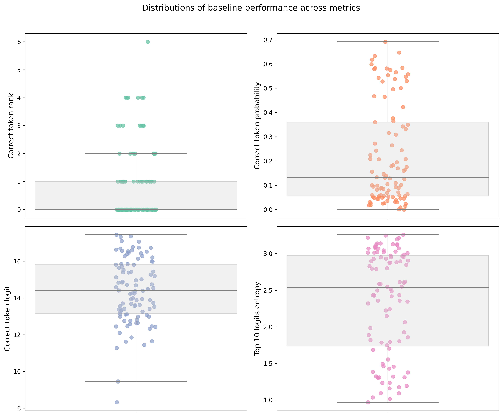The correct token probabilities were not particularly high, with an average value of around 0.15. For the rest of the project, I focused on prompts where the correct token rank was 0, meaning the correct answer was the most likely. I plotted the metrics again only for examples where the correct token rank was 0, which accounted for 57% of the dataset.
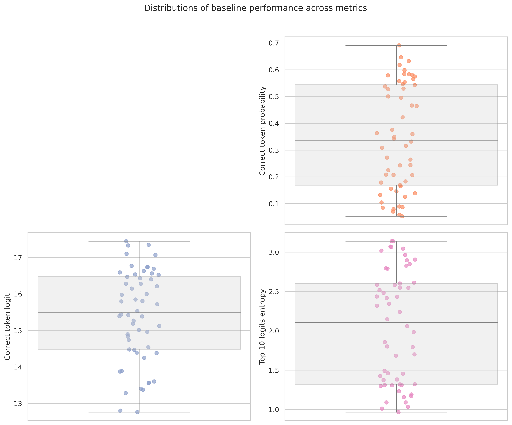Disclaimer: I realised late in this project that the possible answers for the correct sport included both ‘football’ and ‘soccer.’ I’m quite embarrassed—both as someone who prides themselves on their data science skills and as a Brit—that I didn’t notice this sooner. However, I don't think it will significantly impact the results, as language models tend to be predominantly US-centric anyway.
Feature Co-occurrence
Now that the task is set, let’s get stuck into the more interesting aspects! The first step to determine if there is any structure in feature co-occurrence is, unsurprisingly, to run multiple prompts through the model and record which features help the model decide the next token in the sequence. One way to achieve this is by analysing activations in the feature space. However, I chose to focus on feature attribution, which represents how much a feature contributes to steering the model toward the correct answer, rather than just activating for concepts present in the prompt.
Referring back to the previous example we examined: “Fact: Michael Jordan plays the sport of,” then we can calculate attribution scores for all of the features that occur in the feature space of the SAE. For a given token in the input prompt, we can select a token that represents a correct answer and one that represents an incorrect answer, and then compare the difference in logits for the two tokens.
where ai represents the activation of feature i, di is the dictionary (decoder) vector for feature i in the SAE, and ∇xℒ is the gradient of the logit difference between the correct and incorrect tokens. Using the logit difference between two tokens allows for features that strongly associate with the correct answer to be identified.
Once the attribution values have been calculated for all features in the SAE across all the examples in the dataset, then feature co-occurrence can be capture by calculating the correlation of these attribution values between all features. For this part, I actually just considered the intersection of features (i.e. features that had non-zero attribution values for all 100 prompts in the dataset). This kept the set of features relatively small, with correlations between 175 features being calculated.
We can visualise the feature correlations by plotting these as a heatmap. Let’s have a look!
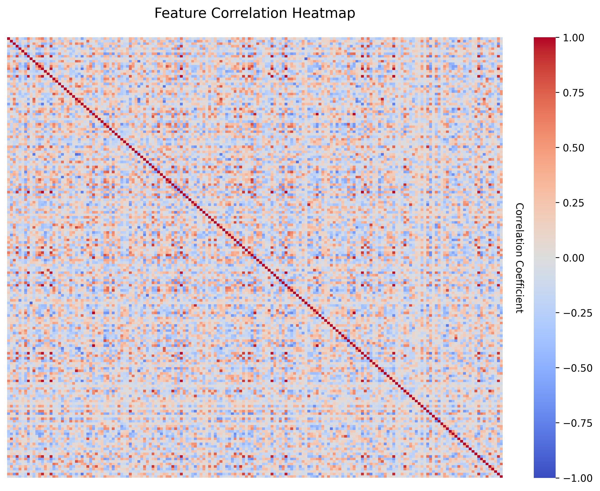TAt first glance, this may seem like a horrible mess, but I was actually quite excited by it. The fact that there’s a decent sprinkling of dark red and blue pixels indicates that there’s some strong correlations between features for the set of prompts that we looked at.
It’s important to remember that if this was all just random noise there’s a good chance that some strong correlations will appear high purely due to statistical chance. This occurs due to random fluctuations, and with approximately 30,000 pairwise correlations, the likelihood of false positives is quite high. However, when sparsity is higher the chance of false positives in correlations decreases. So a concern of mine was that I wouldn’t see any strong correlations at all. This doesn’t mean the correlations above are definitively not false positives, so let’s keep going and see if we can find any meaningful structure in these correlations.
Network Based Clustering of Features by Co-activations
Looking at a correlation matrix like the one above can be pretty overwhelming, especially when you have a high number of variables or features that you’re comparing. One good way to make sense of all the correlations is to transform them into a network! This approach can help to turn a messy correlation matrix into an intuitive visual representation and can help to find structure in the data. Each feature becomes a node in the network, and correlations between features are represented by weighted edges connecting these nodes.
A nice real-world example to think about is the stock market. Imagine that you analyse correlations between stocks in the S&P 500. You could apply network analysis to a correlation matrix of daily returns, then create a map of market relationships. This network would hopefully give you clusters of tightly connected stocks which could be tied together by a common attribute, such as industry sectors. The idea with looking at feature correlations is similar, we can hopefully find clusters of highly associated features that work together to help the model in the specific task it’s been asked to do.
I built a graph from the feature attribution correlations, adding edges where correlation values were >= 0.7. This results in a graph where highly correlated features are connected, with the strength of the correlation reflected in the edge weights.
I then used the Greedy
Modularity Maximisation algorithm from the networkx
library to detect communities (clusters of nodes) in the graph. The key
idea behind the modularity maximisation algorithm is to group nodes in
such a way that (i) there are many edges within the same group (high
internal connectivity) and (ii) there are few edges between different
groups (low external connectivity). The greedy modularity algorithm
works by starting with each node in its own community before iteratively
merging communities that increase the overall modularity score (a metric
that measures the quality of the clustering).
Once we’ve clustered our features, we can group the features by their clusters and plot the heatmap of correlations again.
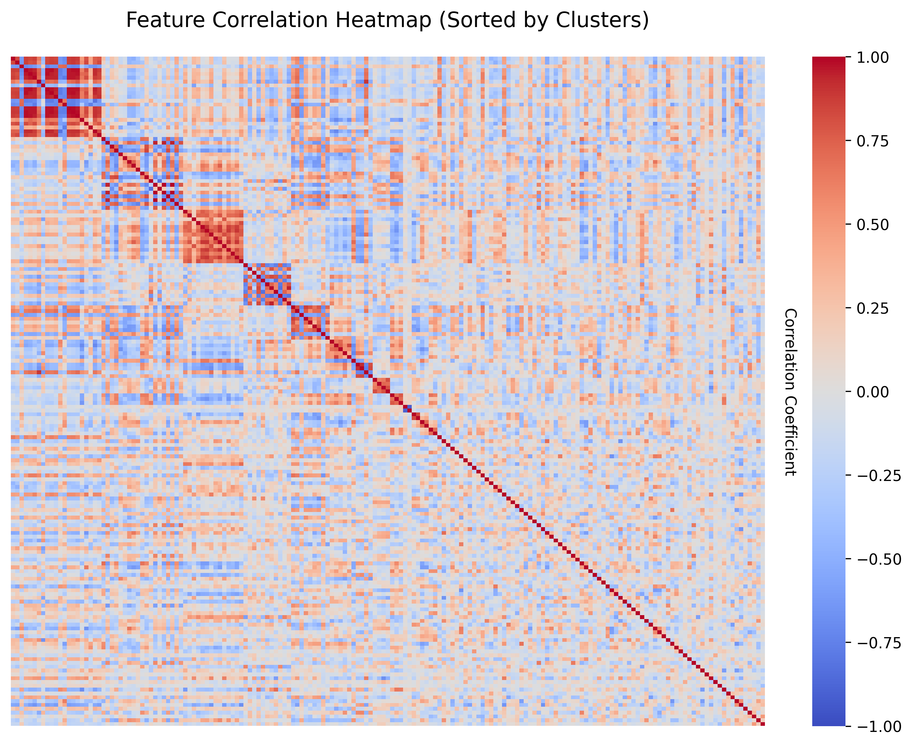Looking at this version of the feature correlation heatmap, you can see how sorting by clusters brings out the data’s structure. The blocks of brighter colours along the diagonal show us groups of features that tend to have similar patterns of attribution across the different prompts.
The heatmap also illustrates the size of the clusters identified by the method. As we move from the top-left to the bottom-right of the diagonal, the blocks decrease in size. If you look at the cluster assignments, you can see that there are a relatively small number of larger clusters and then lots and lots of clusters with only one or two features assigned.
I decided to focus solely on larger clusters, filtering out those with fewer than 10 features assigned. This left me with four main clusters to consider. We can visualise this again as a heatmap to gain a clearer picture of the clusters and plot the absolute correlations to clarify the magnitude of associations between the features.
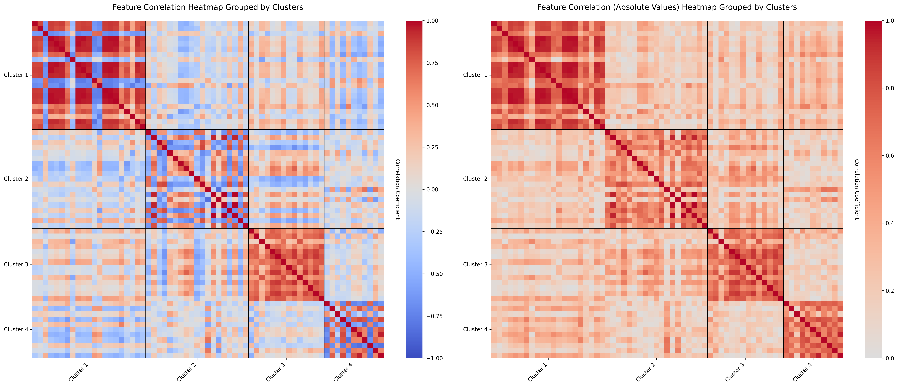Since the data has been modelled as a network, let’s try to visualise the network to see what it looks like.
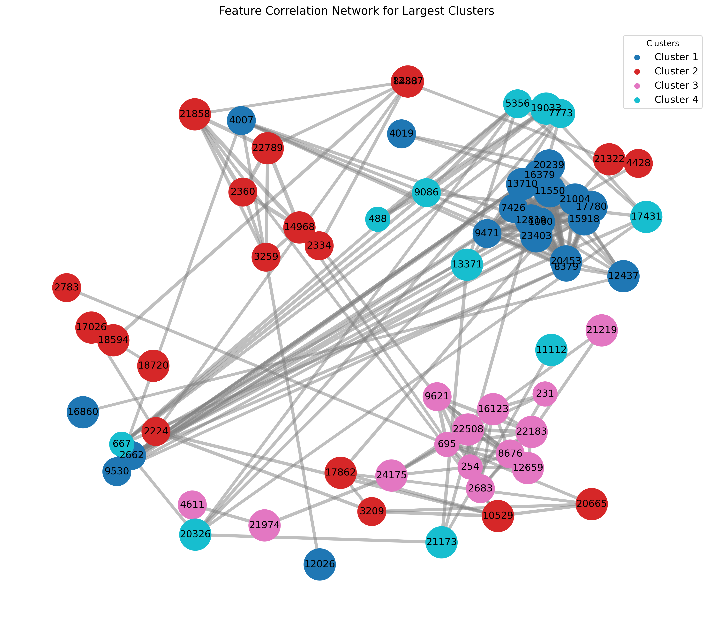The visualisation allows us to easily spot isolated nodes within the
network. We can see that feature 16860
from cluster 1 looks fairly isolated. I’ll create links to the relevant
Neuronpedia page for any features that I mention explicitly. If you
haven’t used Neuronpedia before, I’ll touch on this in a bit more detail
later on in the post.) This feature is described as being related to
“sports-related terms and activities” which makes sense given the nature
of the task that’s being considered. I won’t spend much time interpreting
the properties of the network from this plot,
as I believe network visualisations should be taken with a pinch of salt.
Node spacing in
networkx is meant to represent strength of connections
to an extent, with densely packed nodes having strong associations. This
suggests that features in clusters 1 and 3 generally exhibit high
correlations. However, the plotting algorithm also takes
into consideration the aesthetics and readability of the layout so let’s
move on to examine the cluster properties empirically.
Metrics Across Feature Clusters
It’s useful to calculate metrics that can help us to understand properties of the network. In the stock market example we discussed earlier, these could be stocks that have far-reaching influence across multiple sectors, such as major tech giants or influential financial institutions. Centrality in network analysis can help identify the most important or influential nodes in a graph, similar to finding the far reaching stocks in the stock market. There are different metrics for centrality whose suitability depends on exactly what information you’re trying to extract. I calculated four common metrics of centrality:
Once these were calculated for all the features across our 4 clusters, I had a look at how much they correlated with one another as well as with other metrics calculated on the feature attribution values.
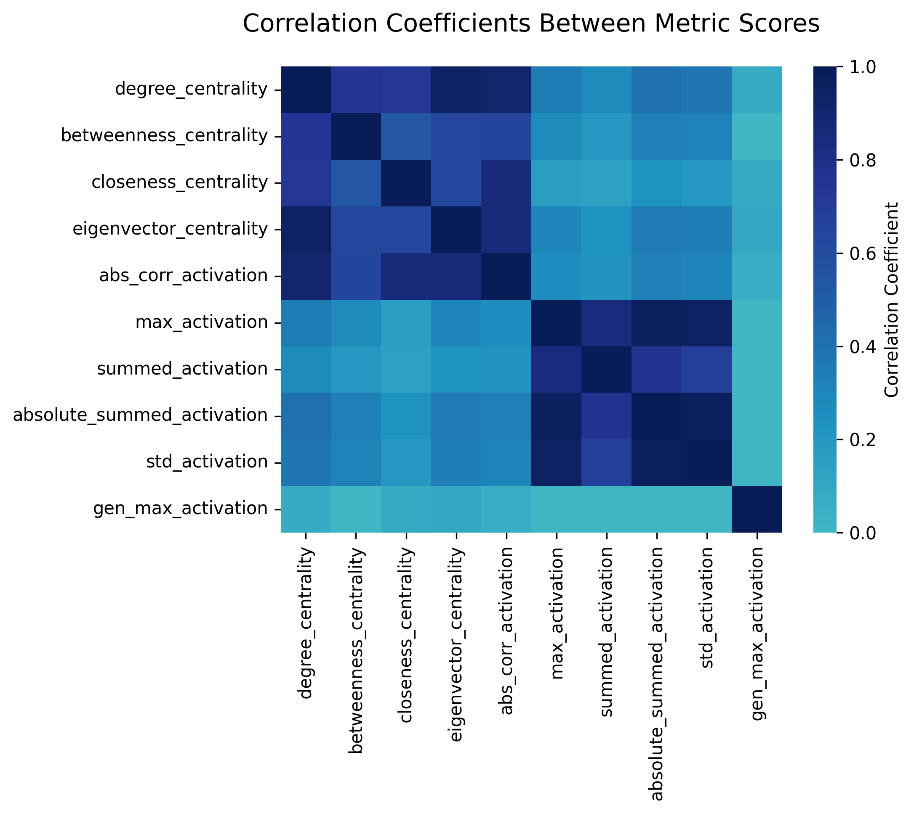The labels for the 4 centrality measures should be self explanatory.
abs_corr_activation represents the absolute correlation
value of a given features attribution score with attribution scores from
other features. max_activation is the maximum attribution
score, summed_activation is the summed attribution score,
abs_summed_activation is the absolute summed attribution
score and std_activation is the standard deviation of
attribution scores for a given feature.
gen_max_activation is the maximum activation found for a
given feature using a independent, generic corpus of text (taken from
the pile dataset).
You can see that the centrality metrics are highly correlated and the
attribution metrics are highly correlated, with fairly modest
correlation between the two groups of metrics.
gen_max_activation seems to have weak correlation with all
other metrics (more on this later).
I then wanted to look at how these metrics were distributed across the different clusters, so I plotted some violin plots to visualise this. Let’s have a look at the centrality measures.
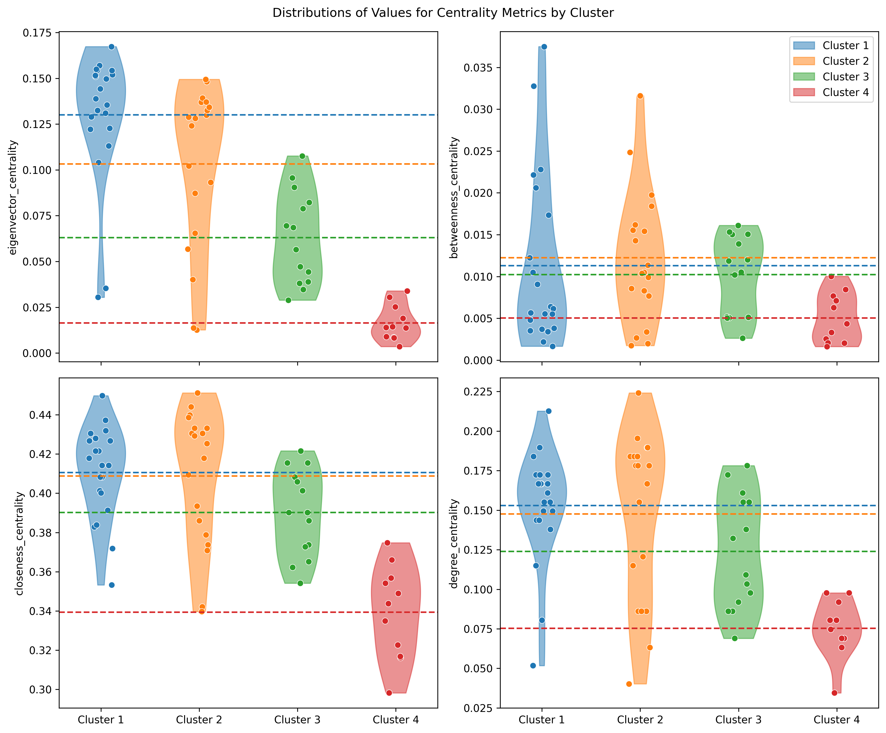You can see some trends across the 4 metrics. Centrality tends to be highest in cluster 1 and descend gradually across each cluster, with cluster 4 having the lowest scores. Let’s also do the same for the attribution metrics.
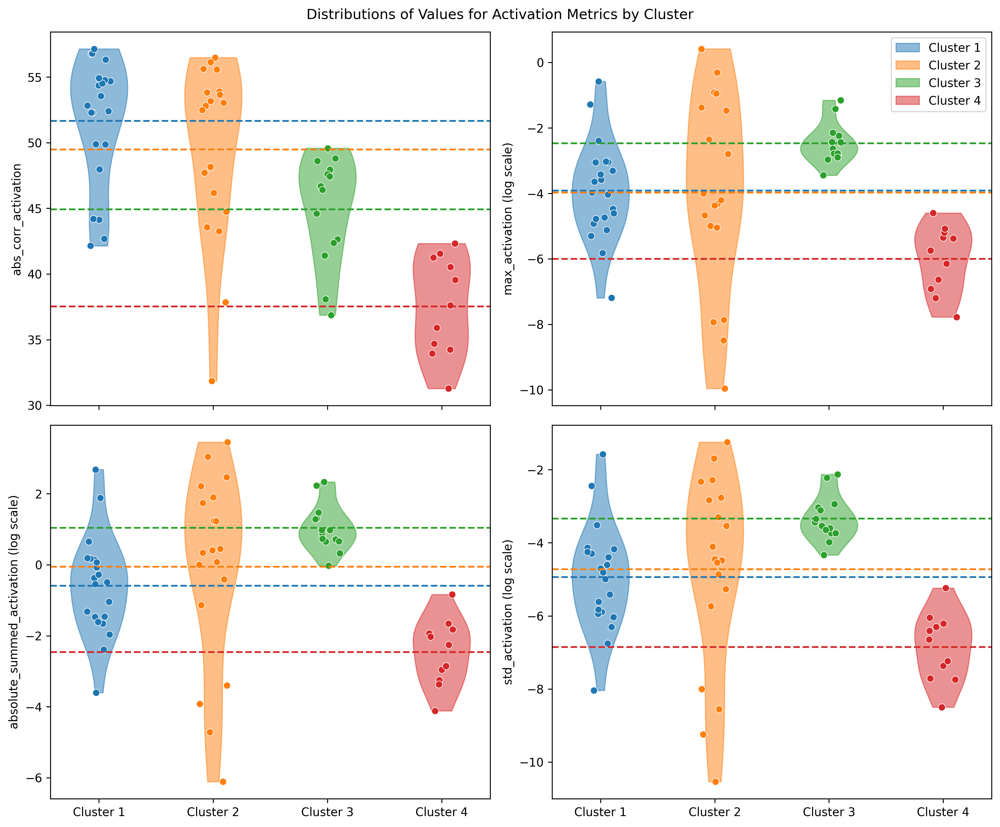The pattern for abs_corr_activation matches the pattern
seen for the centrality metrics, which makes intuitive sense. For the
other 3 attribution metrics, cluster 3 scores highest, with cluster 1
and 2 scoring similarly and cluster 4 scoring the lowest. As well as
eyeballing these, I ran some quick statistical tests to check whether
there were significant differences between the metric scores across the
clusters. I ran one way ANOVAs and used Bonferroni adjusted p-values to
account for potentially inflated false positive rates from running
multiple tests (I didn’t do an post-hoc comparisons between specific
clusters as I wanted to move on to focus on other parts of the
analysis.) These results are summarised below.
| Metric | F-statistic | p-value |
|---|---|---|
| eigenvector_centrality | 30.41 | 3.04e-11 *** |
| betweenness_centrality | 2.22 | 0.755 |
| closeness_centrality | 19.69 | 3.85e-08 *** |
| degree_centrality | 10.62 | 8.27e-05 *** |
| abs_corr_activation | 19.98 | 3.10e-08 *** |
| max_activation | 7.19 | 0.00264 ** |
| absolute_summed_activation | 8.68 | 0.000559 *** |
| std_activation | 8.62 | 0.000597 *** |
Feature Steering and Ablation
One really cool thing you can do with SAEs is to steer or ablate features. Feature steering involves deliberately manipulating activations to influence the output of the model. We can take a feature vector for a given feature or a combination of features in the SAE, increase or decrease the feature activations in this direction and then map to the activation space in the language model to either amplify or suppress certain characteristics of the input respectively.
Feature ablation is similar but focuses on ‘zeroing out’ specific parts of the activations. Because I wanted to examine: 1) the effects of increasing changes to the activation and 2) the effects of perturbing multiple features at once I felt it made more sense to steer features in a negative direction than to simply ablate them. This intuition may be incorrect, so please let me know if you think otherwise. It would be interesting to look at simply zeroing out specific features as well to examine aspects of the feature co-occurrence networks but I had to set boundaries for this project and decided not to explore this further.
For feature steering, I used a base factor of -2.0 to push the steering vectors in the negative direction. This was because I wanted to reduce the effect of given features. When I discuss exploring different ‘steering factors’ or ‘activation strengths’ later, remember that these were also multiplied by this base factor to push them in the negative direction.
I took feature representations from the SAE latent space and then projected these into the activation space of the language model. To negatively steer the features, I scaled the projected vector by the base factor and an additional steering factor (which varied across experiments). This scaled vector was then subtracted from the original language model activations to reduce the influence of the corresponding features. This is expressed as:
Where A is the original activation vector in the language model, P is the projection matrix that maps the feature vector f from the SAE space to the language model activation space, λ is the combined scaling factor, composed of the base and steering factors, and Anew represents the adjusted activations after negatively steering the features.
This procedure effectively reduces the influence of specific features in the language model’s activations, allowing for an evaluation of how the model’s performance changes when certain learned representations are suppressed.
That was a fairly dense explanation, so how about an example of some generated text with and without negative feature steering? We can cut off the final word from the famous quote by Mahatma Gandhi “Be the change you wish to see in the world”, pass this as a prompt to the language model, and see how well the model can predict the correct next token.
For this example, the model predicts ‘world’ as the top token with 44.37% probability. ‘game’ comes in second with a 7.53% probability, and ‘future’ in third with 3.13%. Let’s now try to negatively steer the model to see if we can degrade its performance. We can use feature 6747 which represents “statements or quotes made by individuals”. Using a steering factor of 30, the performance goes down to 12.26% for the correct token.
I won’t use positive feature steering in this project, but just for fun, let’s take a cheese-related feature (feature 23208) and positively steer the model in this feature's direction to see what happens. Sadly, ‘cheese’ doesn’t make it to top spot, but it does get into the top 10 tokens alongside ‘bread’, ‘sandwich’ and ‘crust’ which rose up from positions 15170, 4612, 9897 and 5134, respectively. ‘world’ stays in top spot, but it’s probability drops to a modest 3.95%.
Feature steering is a lot of fun to explore, as it helps develop intuition about how certain features can affect model predictions. I definitely suggest giving it a try if you're interested in this area.
Assessing Feature Importance Through Feature Steering
A big question I wanted to answer was whether there were significant differences in the importance of the features that belonged to the different clusters. As mentioned earlier, we can use negative feature steering to understand how important a feature is for the task at hand. The key idea here is that negatively steering features that are important to a task will lead to a larger degradation of performance than negatively steering an unimportant feature.
The first question I wanted to answer when considering how to asses feature importance through feature steering was: how do I determine the amount by which a given feature should be steered? The SAE Lens tutorial suggests passing through a larger number of general input prompts, taking the maximum activation of each specific feature, and then adjusting the activations in the feature direction relative to those maximum activations. However, since I was looking at feature importance relative to task specific performance I wasn’t sure if it made sense to use general maximum activations.
Initially, I negatively steered all the features in all four clusters by a factor based on their global maximum activation (obtained on a non-task specific dataset). I plotted the performance of the model on the task, using both probability (top) and entropy (below) as performance metrics. These are shown as a function of the global maximum activation for features. There were 5 features with fairly extreme maximum activations (yes, 5 not 4 - two of the points are heavily overlapping and appear as one on first glance) so I plotted graphs both with and without these outliers (more on those 5 features later).
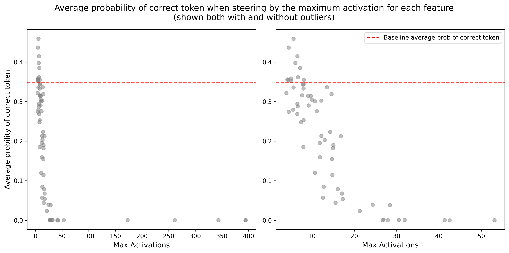The trend shows a decline in performance as a function of maximum activation. I think there’s probably two possible explanations for this: i) we’re steering the features with higher maximum activations by a larger amount, so we’d obviously expect a larger drop in performance for these features or ii) global maximum activation is highly correlated with feature importance on this task. My instinct says it’s the former, but I guess at this point it’s not 100% clear.
Next, I plotted the same values as the previous plot as a function of the task-specific attribution values (which I’ll refer to as local maximum activation). For simplicity, I’ll just focus on probability as a performance metric for now.
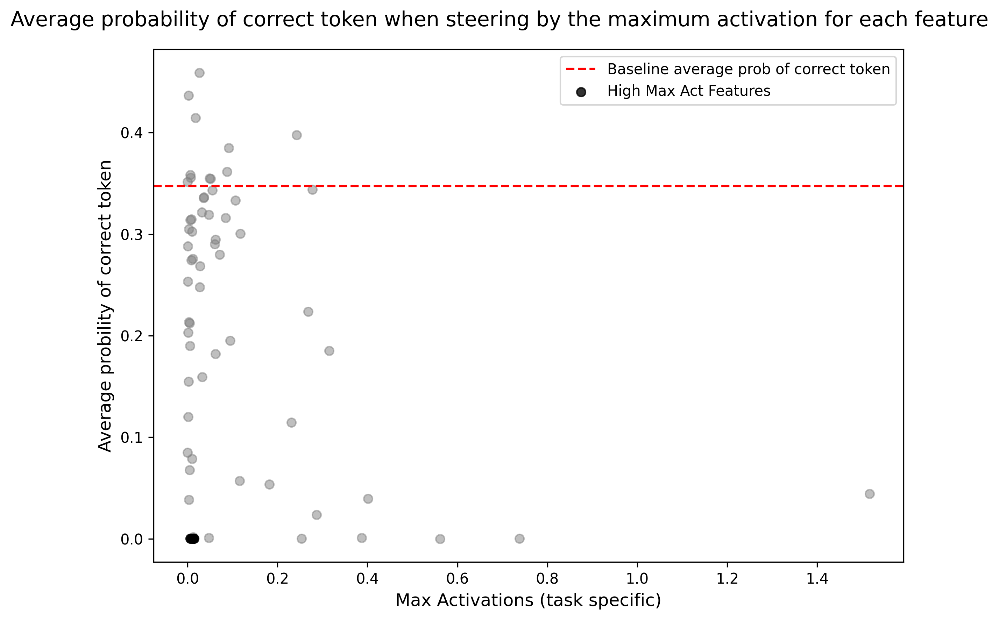We can see that the 5 features that had really large maximum activations actually have pretty small attributions across all the examples in our task dataset. Given this, let’s assume the first explanation is correct.
I also examined what happens when you do much smaller perturbations to the activations. I did this by taking the minimum feature attribution seen across all features and using these as a fixed steering factor for all features. The performance after this milder steering can be plotted against both the global (general) maximum activation and the local (task-specific) maximum attribution.
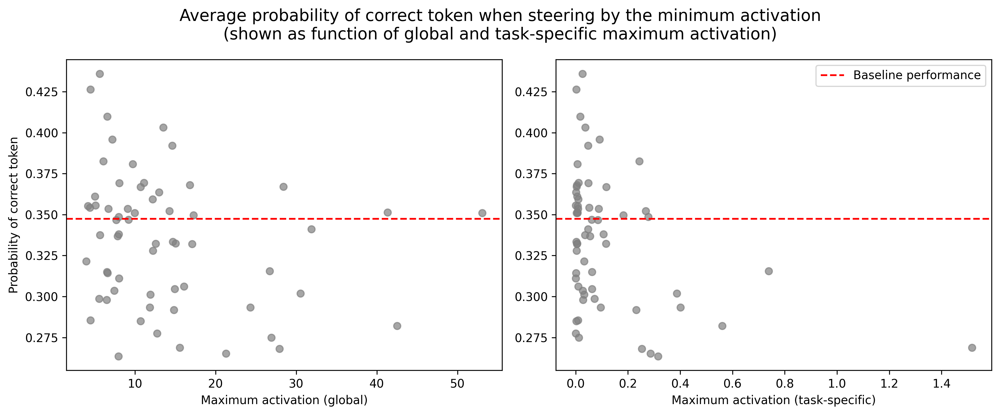At this point, I found no strong evidence to indicate that smaller or larger perturbations would be more informative for the question I was trying to answer (if you have any suggestions, or there are any experimental/theoretical results to indicate one way or the other, please let me know). I decided it would be useful to visualise the effect on performance over a range of steering factors.
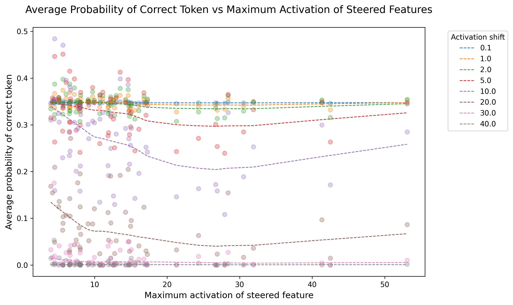It’s hard to interpret the effect of global maximum activation (general maximum activation) on performance here as data points are relatively sparse for the higher values, but I found no strong indication of an effect of this metric on performance. Activation shift clearly had a big effect and I decided to consider a set of values for the final experiments that used a low, mid and high value of activation shift (1, 10 and 30 respectively). With this established, I moved on to the final two (and hopefully more interesting) experiments
Steering Multiple Features
I feel like there is only so much to be learned from perturbing single features and I was especially interested in exploring interaction effects between features. One way to do this is by perturbing small sets of features at the same time.
I explored the effect of this in two ways:
The hypothesis was that negatively steering a set of features that were all sampled from one cluster was likely to have a greater impact on task performance than negatively steering a set of features that were sampled across different clusters. The idea behind this hypothesis is that we can view the clusters as functional groups of closely related features and removing the effects of a set of these features increases the likelihood of disturbing the operations handled by the features in that cluster. Going back to the stock market example once more, imagine the stock price of a group of tech companies all tanking at the same time. It’s likely that the effect of that on the overall stock market would be greater than if the same number of stocks tanked across different industries (I’m not a finance expert or economist by any stretch of the imagination and I’m very open to being corrected on this point).
I decided to look at the effects of perturbations across sets of 1, 2, 3 or 4 features. When sampling features from different clusters, it was important to make sure that the cluster representation remained balanced for the perturbed features when the number of perturbed features was n = 1, 2 or 3 (they would naturally be balanced for n=4). Let’s plot the effect of the number of steered features on task performance for the within cluster and between cluster sampling approach. I’ll show this for the range of steering factors that were mentioned earlier (1, 10 and 30). This plot might be a little hard to visualise, so please click on it to enlarge it.
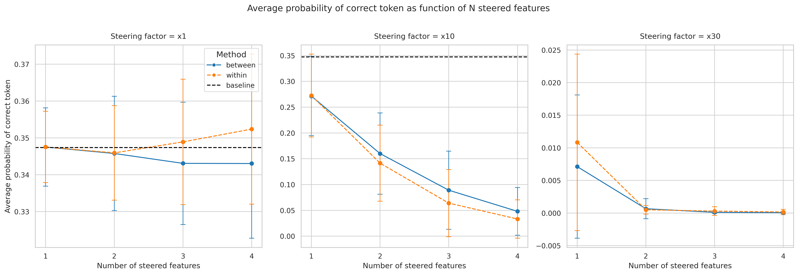There’s a noticeable effect of the number of steered features for the mid-range steering factor (10). This isn’t as visible for the lower and higher steering factors, liekly because they perturb the features by too small or too large an amount respectively. There does not seem to be any difference between the two sampling methods (within cluster sampling and between cluster sampling). I think this can serve as evidence against the earlier hypothesis. There’s potentially a small chance that the different clusters have effects in opposing directions, so I also examined similar plots but splitting the data by cluster (for the within cluster sampling only).
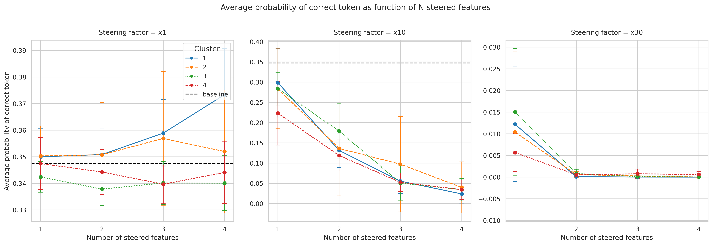Again, there doesn’t appear to be a difference in the drop of performance between the clusters here. This suggests that the hypothesis that perturbing related features will result in a larger drop in performance than perturbing unrelated features is probably false.
As a quick validation, I wanted to make sure that there were higher correlations of attributions between the sets of features sampled from within clusters than those sampled between clusters. I plotted task performance against the average correlation between feature pairs in a set of features (for set sizes 2, 3 and 4) and then split this for with sampling vs between sampling as well as by cluster.
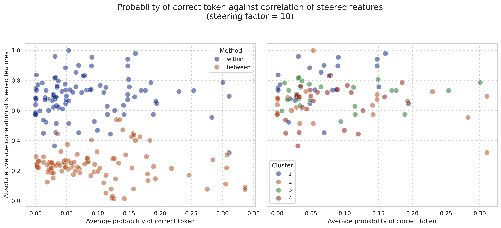Finally, I was curious as to whether the decrease in performance as the number of perturbed features increased was a robust effect or could simply be due to the feature vectors for the different features having a lot of overlapping dimensions. This would mean that adding additional features to perturb was essentially increasing the steering factor. So I tried normalising the steering factor by the number features steered and plotted the data again (note: if you’re wondering why the plots don’t exactly match for the data points where the number of features = 1, it’s because I reran the analysis later and so the feature sampling would have been different).
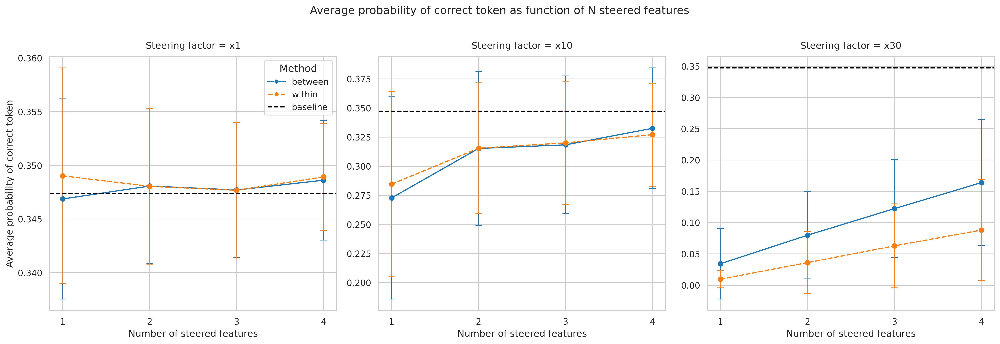This now shows the opposite effect for a steering factor of 10, with performance increase as a function of the number of steered features. It’s a little bit hard to interpret, so I’m mainly going to present this for completeness. If I had to speculate, I would say that with normalisation the steering factor for each individual steered factor goes down. So each individual feature is steered by a factor of 4 less when the number of steered features is 4 relative to when the number of steered features is 1. I would argue that this implies it’s better to steer a larger number of features by a small amount than a single feature by a large amount. Of course, I have no idea whether this claim is true and this observation is limited to a narrow context.
Centrality and Feature Importance
TThe final aspect I examined was how the centrality of a feature affects model performance when the feature is negatively steered. The hypothesis is that steering features with high centrality will lead to greater performance changes, as impacting those features exerts a larger influence on the network of features. If this hypothesis holds, it could suggest that feature centrality is an indicator (or at least associated) with feature importance.
This can be assessed by plotting task performance against the centrality of the steered feature and examining the correlation. Let’s look at degree centrality and betweenness centrality as these two metrics are the most relevant centrality measures. Degree centrality shows us how many other features a given feature correlates with. Betweenness Centrality could be particularly interesting in this context as it captures how much that feature influences the control of information flow. Let’s start with degree centrality, plotting the results for a range of steering factors and running linear regression analysis to determine if there’s a meaningful relationship (again, using a Bonferroni correction to account for multiple testing).
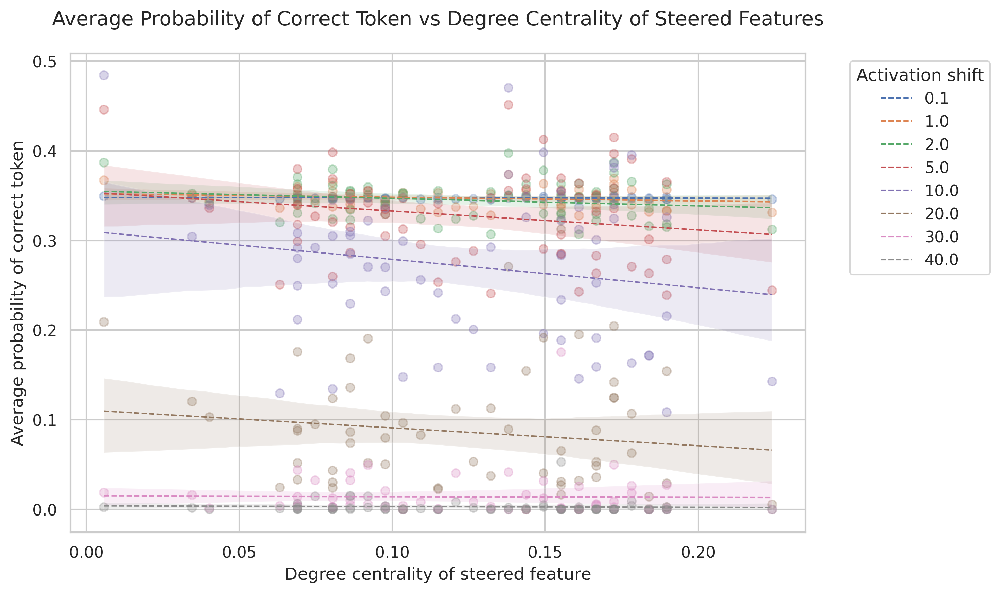| Experiment Output | Slope | Intercept | R-squared | Adjusted P-value |
|---|---|---|---|---|
| 0.1 | -0.004 | 0.348 | 0.029 | 0.185 |
| 1 | -0.040 | 0.352 | 0.032 | 0.117 |
| 2 | -0.083 | 0.355 | 0.034 | 0.105 |
| 5 | -0.211 | 0.354 | 0.038 | 0.088 |
| 10 | -0.317 | 0.311 | 0.031 | 0.122 |
| 20 | -0.199 | 0.111 | 0.018 | 0.208 |
| 30 | -0.008 | 0.015 | 0.000 | > 0.5 |
| 40 | -0.008 | 0.004 | 0.003 | > 0.5 |
There’s not really any effect here for any steering factors. I take this as an indication that the degree centrality, the number of edges a feature has in the network, doesn’t directly relate to the importance of that feature. What about for betweenness centrality?
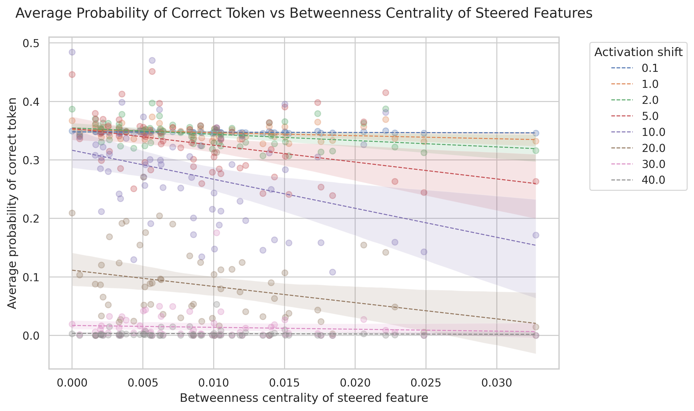| Experiment Output | Slope | Intercept | R-squared | Adjusted P-value |
|---|---|---|---|---|
| 0.1 | -0.051 | 0.348 | 0.097 | 0.098 |
| 1 | -0.523 | 0.352 | 0.106 | 0.070 |
| 2 | -1.083 | 0.355 | 0.117 | 0.049* |
| 5 | -2.883 | 0.354 | 0.144 | 0.014* |
| 10 | -4.959 | 0.316 | 0.150 | 0.013* |
| 20 | -2.773 | 0.111 | 0.070 | 0.259 |
| 30 | -0.324 | 0.017 | 0.007 | > 0.5 |
| 40 | -0.050 | 0.004 | 0.002 | > 0.5 |
Significant effects were found (after controlling for multiple testing), suggesting that betweenness centrality may be associated with feature importance. This is a single result from a small study, so conclusions should be made cautiously. Nonetheless, this result makes intuitive sense as betweenness centrality captures how often a node acts as a bridge along the shortest paths between two other nodes. So features with high betweenness centrality may control information flow within a network, and act as bridges between different functional subgroups of features. This certainly warrants further investigation, but I feel somewhat validated that my initial hypothesis may have some merit.
Project Summary
Key Takeaways
I want to finish by briefly reflecting on the findings and their implications. I won't spend too long writing here since I’ve taken a less structured approach and provided interpretations of the results throughout the posts. While this project had a fairly exploratory nature, it has yielded some interesting insights regarding feature relationships and network analysis in language models. I’ll start by revisiting the initial hypotheses:
In a broader context, this project represents an initial exploration into understanding feature relationships through network analysis techniques. While the findings are preliminary, they offer some insights and potential directions for future research. Below, I've distilled some key reflections from this work:
Taking it Forward
There are several directions I’d like to explore further, as mentioned above. I’ll try to be brief again:
To conclude, this project represents a first step in exploring feature relationships through network analysis in the context of mechanistic interpretability. While the findings are promising, they also highlight the complexity of the task at hand and the need for robust, reproducible research in this field. As we continue to advance our understanding of AI systems, integrating both detailed 'zooming in' approaches and broader 'zooming out' perspectives will be crucial for meaningful progress in AI alignment and safety efforts.
Thanks
A few quick acknowledgements. A big thank you to BlueDot for running an amazing course and in particular my cohort facilitator Alexandra Abbas. Thanks to Neel Nanda for running a great mechanistic interpretability workshop at HAAISS and Joseph Bloom who wrote the tutorial notebook that we went through in the workshop. This was a great introduction to the topic and I highly recommend it if you want to explore this area.
I’d also like to thank Joseph Bloom (again), David Chanin and Johnny Lin for answering some of my newbie questions on the Open Source Mechanistic Interpretability Slack workspace.
The header image is Kynance by John Brett, Bequest of Theodore Rousseau Jr., 1973 accessed through the Metropolitan Museum of Art’s open access collection.
Code
The code is available on my GitHub. Please let me know if you find any issues or have any questions about it.
Quick Appendix: High Maximum Activation Features
Earlier in the analysis, I briefly discussed 5 features that had anomalously high maximum activations. I planned to look into these 5 features in more detail, but in the end it didn’t really fit in to the main analysis. I’m adding this section just to quickly cover these features, but this is something I’d like to expand on further in the future.
First, I had a quick look at what these features supposedly do. Neuronpedia has a nice feature called auto-interp that gives an automatic, language model generated description of what the feature does. It’s not always perfect, but sometimes it gives a good initial insight into a feature. I’ve summarised the auto-interp desctiptions for the 5 anomalous features below. Nothing of note jumped out at me from the descriptions, they actually seemed relatively diverse.
I then checked that these features were all in the same cluster - they were all in Cluster 2 - before plotting a heatmap of the feature correlations. They were very high, with (almost) perfect correlation between features ‘1498’, ‘2360’ and ‘21858’ (the raw correlation values were actually slightly below 1.00 but were rounded up to 2 decimal places).

I thought at first this might be a bug, so I went back through everything to run a few validation checks. I checked the raw attribution values, expecting to find identical values across these feature columns. However, the values I got differed across features. I’ve shown an extract of this below.
| 2360 | 21858 | 14968 | |
|---|---|---|---|
| Fact: Aaron Rodgers plays the sport of | -0.017676 | -0.026757 | -0.039775 |
| Fact: Adam Scott plays the sport of | -0.003785 | -0.005497 | -0.007886 |
| Fact: Adrian Gonzalez plays the sport of | -0.009914 | -0.014650 | -0.022037 |
| Fact: Alex Rodriguez plays the sport of | -0.005118 | -0.007270 | -0.010192 |
| Fact: Alfonso Soriano plays the sport of | -0.008666 | -0.012638 | -0.019193 |
| … | … | … | … |
| Fact: Wayne Rooney plays the sport of | -0.004556 | -0.007803 | -0.011947 |
| Fact: Wladimir Klitschko plays the sport of | 0.002412 | 0.003184 | 0.005379 |
| Fact: Zach Randolph plays the sport of | -0.007580 | -0.010682 | -0.015560 |
| Fact: Zlatan Ibrahimović plays the sport of | -0.003994 | -0.006458 | -0.009983 |
| Fact: Cristiano Ronaldo plays the sport of | -0.015539 | -0.023696 | -0.036357 |
I also went through the centrality metrics for these features. They were on the higher end of the distribution for the cluster, but otherwise nothing of note.
| feature_ids | degree_centrality | betweenness_centrality | closeness_centrality | eigenvector_centrality |
|---|---|---|---|---|
| 14968 | 0.183908 | 0.016176 | 0.433214 | 0.134315 |
| 22789 | 0.166667 | 0.007680 | 0.417879 | 0.124126 |
| 3259 | 0.114943 | 0.001741 | 0.385997 | 0.093255 |
| 21858 | 0.195402 | 0.019733 | 0.439941 | 0.139313 |
| 2360 | 0.178161 | 0.015413 | 0.429276 | 0.128804 |
I also went through the activation metrics and similarly found nothing of note.
| feature_ids | abs_corr_activation | max_activation | absolute_summed_activation | std_activation |
|---|---|---|---|---|
| 14968 | 53.651523 | 0.014965 | 1.509947 | 0.011698 |
| 22789 | 53.041857 | 0.013232 | 1.399653 | 0.011328 |
| 3259 | 46.172227 | 0.012707 | 1.079208 | 0.010637 |
| 21858 | 53.887589 | 0.009430 | 1.003422 | 0.007736 |
| 2360 | 53.168008 | 0.006477 | 0.661920 | 0.005166 |
Finally, I had a quick look at what happened to what happened to task performance when I negatively steered all 5 of these features by varying steering factors. I looked at this both with and without applying a correction factor to the steering amount. This looks in line with what I’d expect given the other results.

At this point, I don’t fully understand why these 5 features are so highly correlated. I’ll try to spend a bit more time on this in the future. If you have any insights or thoughts into this then please let me know!